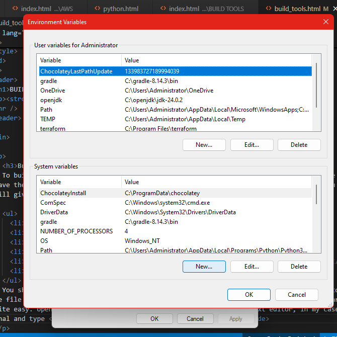

BUILD TOOLS PROJECTS
By Triddles
Building artifacts with Gradle
To build an artifact with gradle you need to have gradle installed. or if you want the portable version make sure you have the gradlew file in your projects roots directory. For windows, sommetimes when you have the gradle installed, it still gives an error , dont worry you can just fix it with a few steps.
- Make sure you know the directory the gradle is located
- Search for Environment variables and open it.
- click on Environment variables
- Under system variables click on New 
- Type gradle as the name and use the main gradle folder's bin directory as path.
- Save and exit. now you can use gradle in command line
You should note that sometimes, this does not work. If it doesn't work, all you have to do is manually point to the gradle file in the bin folder. eg C:\gradle-8.13.4\bin\gradle. with this you can build the artifact. to build an artifact is quite easy. open the folder that contains your application in your text editor, in my case VSCODE editor. open a terminal and type gradle build and leave it to work the magic. After. After it finishes building the artifact, It will store it in the build directory it created when building the artifacts.
Building artifacts with Maven
To build artifacts with maven you of course need to install the maven app. Check out my Installing tool page if you dont have it installed. After installing you can